{kind=link}
{kind=link}
{kind=link}
NCL > Application examples > Basic examples
Ngmath examples
This module is a graphical index to the HLU and NCL NCAR Graphics examples that use the Ngmath library to do interpolation from random grids to rectangular grids. Click on one of the example graphics below to link to information about how to create the graphic and how to access the code and data that were used to generate the plot.
| nm01 | nm02 | nm03 | nm04 |
|---|---|---|---|
| 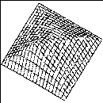 | 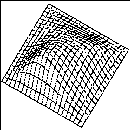 | 
| 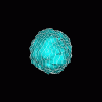 |
| nm05 | nm06 | nm07 | nm08 |
| 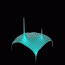 | 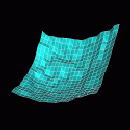 | 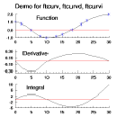 | 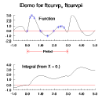 |
| nm09 | nm10 | nm11 | nm12 |
| 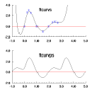 | 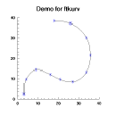 | 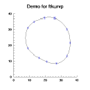 | 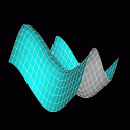 |
| nm13 | nm14 | nm15 | nm16 |

| 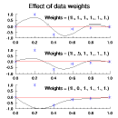 | 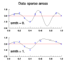 | 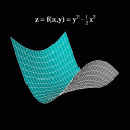 |
| nm17 | nm18 | nm19 | nm20 |
| 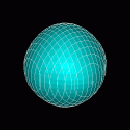 | 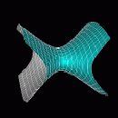 | 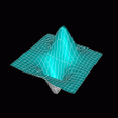 | 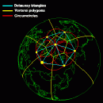 |
| nm21 | nm22 | ||

| 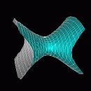 |
- nm01: Simple example of natural neighbor
linear interpolation.
- nm02: Simple example of natural neighbor
linear regridding.
- nm03: How to retrieve aspects and slopes of an
interpolation.
- nm04: Simple 3D interpolation.
- nm05: How to vary the exponent of the distances in a simple 2D interpolation..
- nm06: Smoothing in a simple 2D interpolation.
- nm07: Illustrates the use of ftcurv, ftcurvd, and ftcurvi.
- nm08: Illustrates the use of ftcurvp and ftcurvpi.
- nm09: Illustrates the use of ftcurvs and ftcurvps.
- nm10: Illustrates the use of ftkurv and ftkurvd.
- nm11: Illustrates the use of ftkurvp and ftkurvpd.
- nm12: Illustrates the use of ftsurf.
- nm13: Illustrates the use of csa1s.
- nm14: Illustrates the use of csa1xs.
- nm15: Illustrates the use of csa1xs.
- nm16: Illustrates the use of csa2s and csa2xs.
- nm17: Illustrates the use of csa3s.
- nm18: Illustrates the use of csa3s.
- nm19: Illustrates the use of csa2ls.
- nm20: Illustrates the use of triangulation and Voronoi diagram capabilities of the Cssgrid package.
- nm21: Illustrates the use of Cssgrid package.
- nm22: Illustrates the use of Shgrid package.